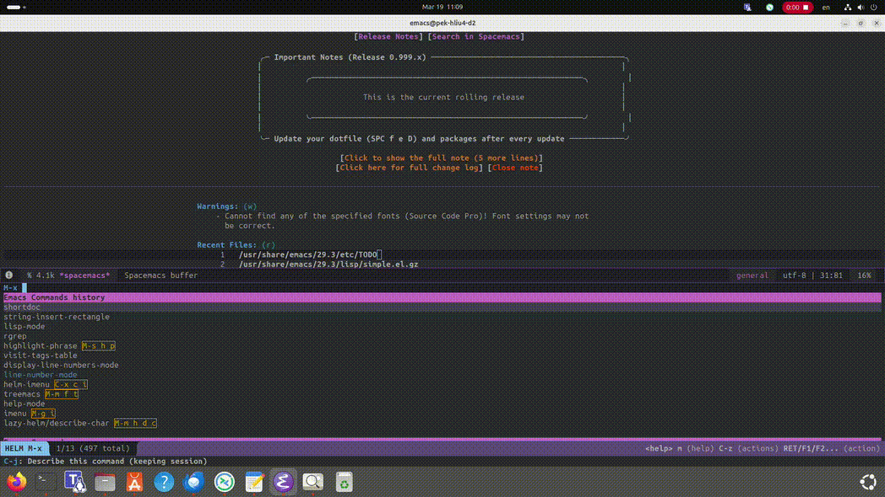

How to get quick overviews of Elisp functions¶
How to Display the shortdoc List in Emacs¶
1. Execute the Command:¶
Type
M-x shortdoc-display-groupand pressRET.
2. View Available Categories:¶
Emacs will prompt you with “Group:”. Press
TABat this prompt. This will display a list of available categories (groups) forshortdoc.
3. Select a Category:¶
Choose a category from the list (e.g.,
list,string,buffer). Type the category name and pressRET.
4. View the Shortdoc:¶
Emacs will open a new buffer displaying a concise overview of the functions within the selected category.
In summary:¶
M-x shortdoc-display-group RET then TAB to show the list of available shortdoc groups.
Then type the name of the group you want, and press enter.